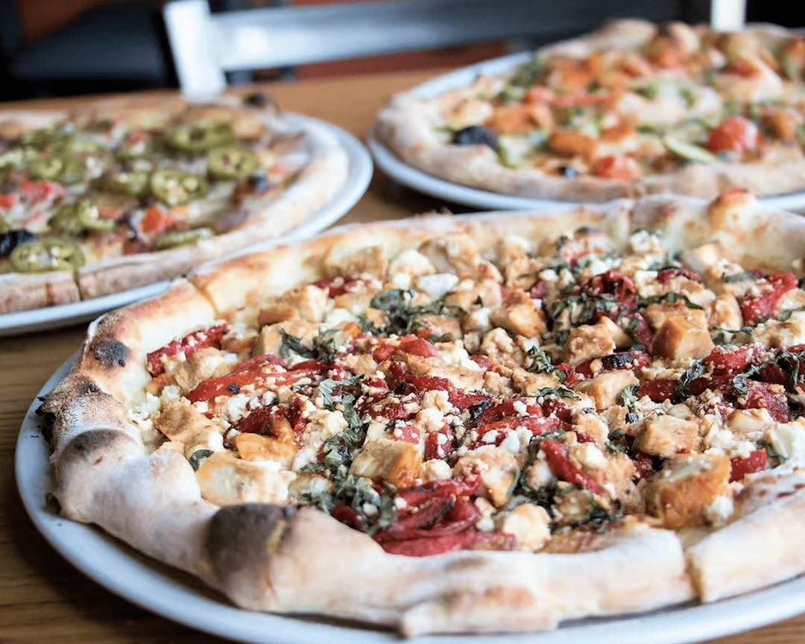
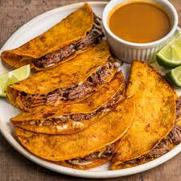

Our Menu 🍽️

Classic Burger 🍔
Grilled to perfection, with fresh lettuce, tomato, and our special sauce. Served with golden fries
Ksh400
Italian Pasta🍝
Rich and creamy pasta, cooked by a very experienced cook who studied in italy.
Ksh300

Wood-fired Pizzas & Risotto
Artisanal, hand-crafted options served in charming, rustic-modern spaces like Mambo Italiano.
Ksh 1500

Birria Tacos
a popular Mexican dish consisting of slow-cooked, shredded meat (traditionally goat, but more commonly beef in the U.S.) folded into a corn tortilla with melted cheese, pan-fried until crispy, and served with a side of consommé (broth) for dipping.
Ksh900
Crispy Rice Cake Lasagna
Sticky rice cakes, so readily chewy and absorbent of their environment, are cooked in “lasagna” form—wobbly bobbly in three separate layers of sauces.
Ksh600